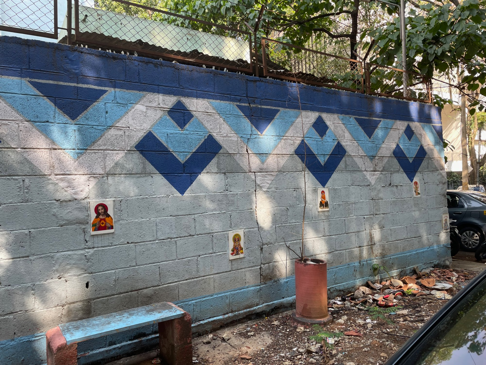

Ouregen is building the infrastructure that transforms fecal sludge
into valuable by-products — while formalizing the informal collection
economy that makes it possible.

Bangalore, India
Bangalore's low-tech solution to public urination. Ouregen's is more ambitious.